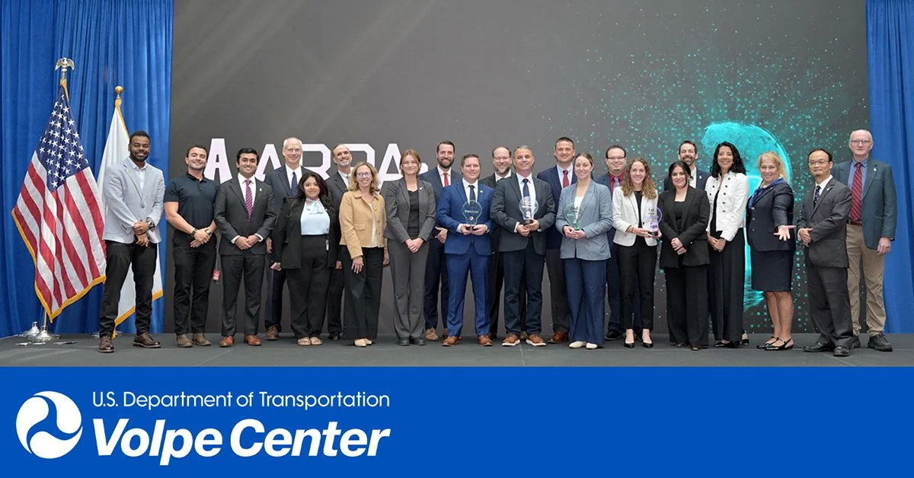

I am the founder and CEO of ApexAI, where we develop real-time spatial navigation software that runs entirely on a consumer handset. Our systems perform perception and localization on-device, which removes the network round trip from the guidance loop and permits operation with no connectivity and no transmission of imagery off the device.
I am also a Research Assistant Professor in Intelligent Transportation Systems at the University of Tennessee-Oak Ridge Innovation Institute, within the Transportation Convergent Research Initiative. My research applies computer vision and machine learning to road safety: modeling driver and pedestrian behavior under conflict conditions, detecting and characterizing hazards in video and multi-sensor data, and constraining model architectures to the latency and compute budgets that field deployment imposes.
This work has been supported by the National Science Foundation, the U.S. Department of Transportation, Meta Reality Labs, and several state departments of transportation and municipalities. I serve as a reviewer for IEEE CVPR, the ASCE Journal of Transportation Engineering Part A, Transportation Research Record, and IEEE ITSC. Outside of work I run and ski.
- Google Scholarscholar.google.com
- ORCID0000-0002-4265-071X
- LinkedInmaged-shoman
- ApexAIapex-ai.site
News
-

PRISM placed third in the $1M ARPA-I Ideas and Innovation Challenge, taking a $150,000 Stage 2 prize. The four finalists, selected from 448 submissions nationwide, pitched to a judging panel at U.S. DOT headquarters. - ApexAI profiled by teknovation: ApexAI is building independence for people with vision loss.
- ApexAI selected for Cohort 1 of the NSF-funded NobleReach Science2Venture accelerator, one of three Tennessee startups.
- Filed U.S. non-provisional (19/760,891) and Canadian (3,319,882) patent applications covering real-time computer-vision navigation assistance.
-
 Began a pilot deployment of ApexVision with a regional accessibility center under structured outcome measures.
Began a pilot deployment of ApexVision with a regional accessibility center under structured outcome measures. -
 Two papers accepted at the Transportation Research Board Annual Meeting, on assistive navigation for visually impaired pedestrians and on tracking of unlabeled radar point clouds.
Two papers accepted at the Transportation Research Board Annual Meeting, on assistive navigation for visually impaired pedestrians and on tracking of unlabeled radar point clouds. -
 Named Most Impactful Company at CodeStock.
Named Most Impactful Company at CodeStock. - Co-organized 2COOOL, the 2nd Workshop on the Challenge of Out-of-Label Hazards in Autonomous Driving, at IEEE/CVF ICCV in Honolulu.
-
 Keynote at IEEE/CVF ICCV, Honolulu, and opening keynote at IEEE/CVF WACV, Tucson.
Keynote at IEEE/CVF ICCV, Honolulu, and opening keynote at IEEE/CVF WACV, Tucson. - Completed NSF I-Corps customer discovery, comprising more than 50 structured customer interviews.
-
 UTC profiled the distracted-driving prediction work at CUIP: CUIP research seeks to predict and avert distracted driving.
UTC profiled the distracted-driving prediction work at CUIP: CUIP research seeks to predict and avert distracted driving.